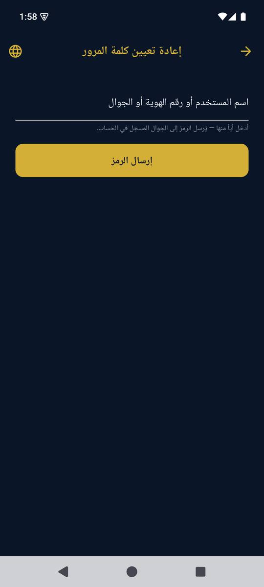
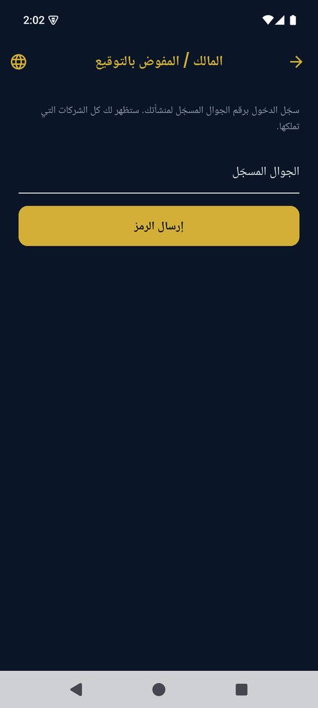
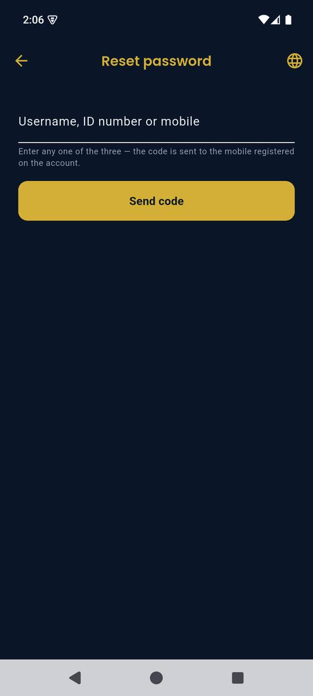
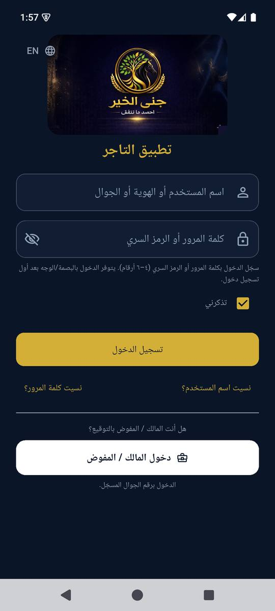

×
×عرض أولي للشراكة
تحليل إطلاق ونمو جنى الخير في الرياض
خطة تجمع جاهزية المنتج، ظهور البحث، المحتوى، والتفعيل الميداني حول شبكة تجار تبدأ من أحياء مختارة في الرياض.
تاجر جاهز
متسوق مفعّل
عملية مكتملةدورة نمو قابلة للقياس
BRANDOLOGY × جنى الخيرسياق الإطلاق
من الموجز
نبدأ من أحياء محددة، ثم نوسع ما يثبت نجاحه
الإطلاق الأول في الرياض يركز على عدد محدود من الأحياء. نجهز التجار أولًا، ثم نفعّل المتسوقين حول نقاط البيع الجاهزة.
01
نطاق جغرافي واضح
نختار الأحياء حسب كثافة التجار، سهولة الإنتاج، وقدرة الفريق على متابعة التفعيل.
02
التاجر يسبق الإعلان
لا نرسل المتسوق إلى متجر غير جاهز. ندرب الفريق ونثبت رمز الدفع ونراجع تجربة العملية.
المصدر: موجز شريك التسويق والمحتوى المقدم من جنى الخير، أغسطس 2026.
BRANDOLOGY × جنى الخيرفهمنا للمنصة
جمهوران أساسيان
المتسوق والتاجر
لكل جمهور احتياج ورسالة وإجراء مختلف. يفهم المتسوق قيمة المكافأة، بينما يفهم التاجر أثر البرنامج على تكرار الشراء.
B2Cالمتسوق
يبحث عن الكاش باك، النقاط، العروض، القسائم، والمتاجر القريبة.
B2Bالتاجر
يريد عملاء يعودون، تكلفة مرتبطة بالبيع، وتقارير يفهمها فريقه.
المصادر: موقع جنى الخير العام، عرض منصة التاجر، وموجز الشراكة. تبقى خصائص التشغيل المقيدة بالدخول بحاجة إلى تحقق عملي.
BRANDOLOGY × جنى الخيردورة النمو
Merchant-first
نحوّل كل حي إلى دورة نمو صغيرة
الهدف ليس تنزيل التطبيق وحده. النجاح يبدأ عندما يجد المتسوق متجرًا جاهزًا، يكمل أول عملية، ثم يعود.
1. اختيار التجارفئات يومية وتغطية قريبة داخل الحي.
2. تجهيز نقاط البيعرمز واضح، تدريب، ورسالة موحدة للفريق.
3. تفعيل المتسوقينبحث محلي ومحتوى وإعلانات ضمن النطاق.
4. إكمال العمليةقياس الدفع والمكافأة دون انقطاع.
5. تكرار ما نجحنوسع الفئات والأحياء حسب العمليات الفعلية.
منطق الإطلاق: موجز الشريك، أغسطس 2026. معيار القياس: المستخدمون المفعّلون والعمليات المكتملة.
BRANDOLOGY × جنى الخيرأولويات العميل
شروط العمل
أربع قواعد تحكم الخطة والتنفيذ
1
العربية تقود
نكتب بصوت سعودي طبيعي، ثم نبني النسخة الإنجليزية بما يناسب جمهورها.
2
كل ادعاء له سند
لا ننشر وعود دخل أو أرقام سوق أو امتثال دون وثيقة واعتماد.
3
الإنتاج من الرياض
نصور المتجر وصاحبه وتجربة الدفع داخل الأحياء المستهدفة.
4
العملية أهم من الوصول
نقيس التفعيل وأول عملية والتكرار، ولا نكتفي بالمتابعين والانطباعات.
المصدر: قسم «ما يهمنا» في موجز الشريك.
BRANDOLOGY × جنى الخيرحدود الدليل
الرؤية مقابل التحقق
عرض المنتج يشرح الوجهة، والفحص يحدد نقطة البداية
المستند المقدم من جنى الخير يعرض بوابة التاجر والتقارير والتسويات والفروع. فحصنا المستقل لم يدخل الحساب التجاري، لذلك نعامل تلك الشاشات كرؤية منتج حتى نختبر دورة كاملة.
حسب مستند المنتجالمسار المقصود
عمليات، تقارير، تسويات، فروع، مستخدمون، رموز دفع، وتنبيهات.
تم التحققالمتاح في الفحص
تجربة المستهلك بحساب مسجل، وتجربة التاجر قبل تسجيل الدخول فقط.
نثبت السلوك الفعلي بحساب تجريبي وعملية من الدفع إلى التسوية والتقرير.
المصادر: عرض منصة التاجر المقدم من جنى الخير، وفحصا UX لتطبيقي المستهلك والتاجر، سبتمبر 2026.
BRANDOLOGY × جنى الخيرالظهور العضوي
لقطة 2 سبتمبر 2026
الموقع يعمل، لكن صفحاته غير واضحة لـGoogle
Ahrefs لم يرصد كلمات أو زيارات عضوية سعودية للنطاق في هذه اللقطة. عدد المواقع التي تضع روابط إلى النطاق لا يعكس قوة؛ أعلى 20 موقعًا حيًا في العينة حمل إشارات Spam.
0كلمات عضوية سعودية مرصودة
0زيارات عضوية سعودية مقدرة
DR 0تقييم النطاق في Ahrefs
406مواقع تربط بالنطاق، مع تحذير جودة واضح
المصدر: Ahrefs API، السعودية، وضع النطاقات الفرعية، 2 سبتمبر 2026. أرقام تقديرية خارجية وليست بيانات Search Console أو GA4.
BRANDOLOGY × جنى الخيرSEO تقني
ما يصل إلى الزاحف
المتصفح يعرض الموقع، والزاحف يجد صفحة فارغة
الموقع يعمل كتطبيق React أحادي الصفحة. الزحف التقليدي اكتشف الصفحة الرئيسية وثلاثة ملفات تقنية فقط، ولم يجد روابط صفحات التسويق التي تظهر بعد تشغيل JavaScript.
4موارد اكتشفها الزحف القياسي
0كلمات وH1 وH2 في HTML المستلم
0روابط داخلية اكتشفها الزاحف
1عنوان ووصف يتكرران على مسارات React
يحتاج كل مسار عام إلى HTML قابل للفهرسة، عنوان ووصف خاصين، H1، روابط داخلية، ونسخة لغة مستقلة.
مؤشر الأداء المختبري كان مقبولًا في عينة واحدة. لا نعرضه كبيانات Core Web Vitals قبل GSC وCrUX.
المصادر: زحف تقني قياسي، HTML الخادم، وفحص المتصفح بعد تشغيل JavaScript، 2 سبتمبر 2026.
BRANDOLOGY × جنى الخيرأولويات الإصلاح
الأساس قبل المحتوى
ستة إصلاحات تفتح باب الفهرسة الصحيحة
حرجSitemap حقيقي
المسارات الشائعة تعيد صفحة HTML بدل ملف XML.
حرج404 حقيقية
الرابط غير الموجود يعيد 200 ثم يظهر صفحة فارغة.
مرتفعCanonical وتحويلات
www وبدونه، والحروف الكبيرة والصغيرة، تعمل دون توحيد.
مرتفعصفحات قابلة للزحف
نخدم المحتوى والعناوين من الخادم أو عبر prerender موثوق.
مرتفعروابط عربية وإنجليزية
نبني URL لكل لغة مع hreflang وMetadata مترجمة.
بناء الثقةSchema ومشاركة اجتماعية
نضيف بيانات منظمة واقعية وصور مشاركة للصفحات الأساسية.
المصدر: فحص HTTP وDOM للمسارات العامة، 2 سبتمبر 2026. التنفيذ النهائي يعتمد على صلاحيات الاستضافة وCloudflare.
BRANDOLOGY × جنى الخيرطلب المستهلك
Google Keyword Planner
المتسوق يبحث بلغة الكاش باك والنقاط
الفرصة العربية واضحة. نبدأ بصفحة اكتساب رئيسية، ثم نفصل القسائم والعروض والاستبدال حتى لا تتنافس الصفحات مع بعضها.
متوسط البحث الشهري، السعودية، Google Search، العربية، مطابقة تامة، 2 سبتمبر 2026. حجم البحث مدخل للتخطيط وليس توقعًا للزيارات أو المبيعات.
BRANDOLOGY × جنى الخيرطلب التاجر
B2B عربي وإنجليزي
الحجم أقل، والنية التجارية أعلى
كلمات التاجر العربية تحمل حدود عروض سعرية أعلى من أغلب كلمات المستهلك. هذا يبرر مسارًا مستقلًا للتاجر وصفحات قطاعية للمقاهي والمطاعم.
العربية
| الكلمة | بحث/شهر | حد عرض أعلى |
|---|
| برنامج ولاء العملاء | 140 | $14.87 |
| منصة ولاء | 50 | $3.78 |
| نظام ولاء العملاء | 40 | $16.70 |
| برنامج ولاء للمقاهي | 30 | $13.56 |
الإنجليزية
| Keyword | بحث/شهر | الدور |
|---|
| loyalty platform | 260 | صفحة B2B أساسية |
| loyalty program software | 90 | حل تقني |
| restaurant loyalty program | 30 | قطاع المطاعم |
| QR loyalty program | 10 | صفحة ميزة أو دليل |
المصدر: Google Keyword Planner، السعودية، العربية والإنجليزية، مطابقة تامة، 2 سبتمبر 2026. حدود العروض بالدولار كما أعادتها الأداة.
BRANDOLOGY × جنى الخيرخريطة البحث
صفحة لكل نية
نحوّل الموقع من رسالة عامة إلى مسارات اكتساب
/consumerالكاش باك والنقاط
كيف يعمل، أين يستخدم، كيف يستبدل، ثم تحميل التطبيق.
/businessبرنامج ولاء للتاجر
العائد، آلية التسجيل، التشغيل في الفرع، وطلب الانضمام.
ننشئ صفحات قطاعية للمقاهي والمطاعم بعد توثيق الملاءمة التشغيلية وتجربة تاجر يمكن عرضها.
المصدر: خريطة الكلمات المقترحة واحتياجات الجماهير في موقع جنى الخير وعرض منصة التاجر.
BRANDOLOGY × جنى الخيرالمشهد التنافسي
ثلاثة نماذج قريبة
الفرصة مفتوحة لمن يشرح التجربة ويثبتها
Sekkara
أوضح فصلًا بين المستهلك والتاجر، ويشرح QR وPOS والتقارير في صفحات عربية مستقلة.
مرجع وضوح المنتج+More
متمركز في السعودية ويجمع المستهلك والتاجر في صفحة واحدة، لكن ظهوره العضوي محدود وبعض ادعاءاته تحتاج سندًا.
منافس محلي مبكرPoints / Papp
أقرب دليل على أن نطاق ولاء سعودي يمكنه ترتيب كلمات «نقاط» و«نقاط الولاء».
دليل طلب عضوي المصادر: فحص سريع لمواقع المنافسين، بيانات صفحاتهم العامة، ولقطة Ahrefs السعودية، 2 سبتمبر 2026.
BRANDOLOGY × جنى الخيرAhrefs
الظهور المرصود
Papp يثبت قابلية ترتيب فئة النقاط
من بين النطاقات الأربعة في اللقطة، ظهر Papp وحده بترتيب سعودي قابل للقياس. جنى الخير وSekkara وMore لم يسجلوا كلمات سعودية مرصودة في تلك اللحظة.
| الكلمة | الترتيب | الحجم في Ahrefs |
|---|
| points | 2 | 600 |
| نقاط | 4 | 700 |
| نقاط الولاء | 5 | 250 |
| النقاط | 1 | 400 |
| حساب نقاط | 8 | 30 |
323زيارة عضوية سعودية مقدرة لـ Papp
14كلمة عضوية سعودية مرصودة
نبني الصفحات العربية الأساسية أولًا، ثم نكسب روابط سعودية حقيقية من التجار والشركاء والإعلام.
المصدر: Ahrefs، السعودية، 2 سبتمبر 2026. الترتيب والحجم والزيارات تقديرات طرف ثالث وقد تتغير.
BRANDOLOGY × جنى الخيرتطبيق المستهلك · 1/5
الثقة قبل التجميل
المسارات الرئيسية تحتاج نهاية موثوقة
11ملاحظة حرجة
16ملاحظة متوسطة
أولوية الإطلاق
- إصلاح خطأ الكاميرا في «امسح وادفع».
- إخفاء الخريطة والتجار غير الجاهزين أو تقديم حالة انتظار صريحة.
- توحيد الرصيد والتجار بين الشاشات.
المصدر: فحص UX لتطبيق المستهلك بحساب مسجل، سبتمبر 2026. الحصيلة الكاملة: 33 ملاحظة و37 لقطة موثقة.
BRANDOLOGY × جنى الخيرتطبيق المستهلك · 2/5
لغة المال
يحتاج المستخدم إلى مقياس واحد للقيمة
نستخدم «نقاط» كمصطلح أساسي، ونشرح علاقتها بالقسيمة والكاش باك بلغة ثابتة.
اليوم
نقاط، قسيمة، كاش باك، ريبيت، ومكافآت لنفس القيمة.
المطلوب
رصيد مفهوم، قيمة تحويل واضحة، ورسالة «تحتاج X نقطة».
المصدر: البنود 3.1–3.3 و4.1–4.2 في فحص UX للمستهلك.
BRANDOLOGY × جنى الخيرتطبيق المستهلك · 3/5
نظام التصميم
نجمع الواجهة تحت هوية واحدة
الألوان
كحلي وذهبي للعلامة، وألوان دلالية محدودة للنجاح والتنبيه والخطأ.
الخط
عائلة عربية ولاتينية بأوزان واضحة بدل الاعتماد على خط النظام.
الأيقونات
مجموعة واحدة بدل الإيموجي والأنماط المتعددة لنفس الوجهة.
الشعار
SVG أو PNG شفاف، مع نسخة مبسطة للاستخدامات الصغيرة.
المصدر: قسم الهوية البصرية والأيقونات في فحص UX للمستهلك. الفحص وجد مشكلات حرجة في اللون والخط واستخدام الإيموجي.
BRANDOLOGY × جنى الخيرتطبيق المستهلك · 4/5
التنقل والتخطيط
نقلل الاختيارات، ونحمي الإجراء الأساسي
مسارات أقل
الشريط السفلي للوجهات الأساسية، والدرج للحساب والإعدادات.
أزرار ظاهرة
نحترم Safe Area حتى لا يختفي زر التحويل أو النسخ خلف شريط النظام.
شبكات سليمة
تظهر البطاقة كاملة في العربية والإنجليزية دون قص النص.
حالات فارغة مفيدة
عنوان وشرح وإجراء واحد بدل مساحات واسعة بلا توجيه.
المصدر: قسما التنقل والتخطيط في فحص UX للمستهلك. اختبار التباين والوصولية يدخل ضمن ضمان الجودة.
BRANDOLOGY × جنى الخيرتطبيق المستهلك · 5/5
ترتيب الإصلاح
نجهز المنتج للتفعيل على ثلاث دفعات
قبل الإطلاق- الدفع والتجار والخريطة
- المصطلح المالي والبيانات
- النصوص المكسورة والترجمة
الدورة التالية- الألوان والخط والأيقونات
- القص والقوائم السفلية
- التنقل والحالات الفارغة
التلميع- التباين وتسميات الحقول
- الحواف والظلال والرجوع
- الإكرامية وحوافز المراجعات
بوابة الخروج: عملية دفع تجريبية مكتملة، رصيد متطابق بين الشاشات، وتدقيق عربي وإنجليزي على الأجهزة المستهدفة.
المصدر: خارطة الأولويات في فحص UX للمستهلك.
BRANDOLOGY × جنى الخيرتطبيق التاجر · 1/4
مدخل أنضج
تجربة الدخول تملك أساسًا جيدًا
0ملاحظات حرجة في نطاق ما قبل الدخول
4ملاحظات متوسطة
- Cairo للعربية وPoppins للاتينية.
- انعكاس RTL/LTR سليم في الشاشات المفحوصة.
- نصوص أمان مفيدة ومسارات استعادة متعددة.
الرقم صفر لا يشمل لوحة التاجر أو الدفع أو التسويات أو التقارير.
المصدر: فحص UX لتطبيق التاجر، سبتمبر 2026. النطاق اقتصر على الشاشات المتاحة دون حساب تاجر.
BRANDOLOGY × جنى الخيرتطبيق التاجر · 2/4
الحقول والتحقق
نستخدم مكوّنًا واحدًا في كل مسارات الدخول


الاختلاف الحالي
الدخول يستخدم حقولًا مؤطرة، بينما الاستعادة ودخول المالك يستخدمان خطًا سفليًا.
الحالة المطلوبة
تسمية ثابتة، مثال ظاهر، تركيز واضح، خطأ تحت الحقل، وزر يتفعل بعد إدخال صحيح.
المصدر: البنود 2.1–2.2 و3.2–3.3 في فحص UX لتطبيق التاجر.
BRANDOLOGY × جنى الخيرتطبيق التاجر · 3/4
الهوية والتخطيط
نملأ الشاشة بالمعلومة، لا بالفراغ
الشعار
نستبدل JPG بأصل شفاف ونضبط ملاءمته داخل الحاوية.
التخطيط
شاشات الاستعادة تترك 75–85% من الارتفاع فارغًا.
التباعد
نفصل الحقل عن الزر ونثبت مساحة قراءة للنص المساعد.
الأرقام
نعتمد نظامًا واحدًا للأرقام في النصوص والجوال وOTP.


المصدر: البنود 1.1 و3.1 و4.1 في فحص UX لتطبيق التاجر.
BRANDOLOGY × جنى الخيرتطبيق التاجر · 4/4
الأمان والتحقق
نختبر الدورة التي يدير بها التاجر ماله وفروعه
قبل الدخول
نجعل «تذكرني» اختيارًا واضحًا، ونوضح ما يحفظه التطبيق على جهاز نقطة البيع.
رمز التحقق
رمز دولة، حالة إرسال، مهلة إعادة الإرسال، انتهاء الرمز، والمحاولات الخاطئة.
بعد الدخول
نختبر قبول دفعة، الإشعار، الحركات، التسوية، الفروع، المستخدمين، والتقرير.
نحتاج حساب تاجر تجريبي وبيئة دفع آمنة قبل اعتماد تجربة ما بعد الدخول.
المصادر: فحص UX لتطبيق التاجر وعرض المنتج المقدم من جنى الخير. العرض يصف الرؤية، والفحص العملي يثبت السلوك.
BRANDOLOGY × جنى الخيرالاستجابة للموجز
نطاق مقترح
نربط كل خدمة بهدف الإطلاق
الموجز يطلب مرونة ووضوحًا. نقترح مسارًا متكاملًا، ثم نثبت فريق الحساب، التقويم، وآلية التنفيذ في ورشة النطاق.
المجال
دور Brandology
الناتج
مقياس النجاح
توحيد العلامة
قيادة النظام والنبرة
دليل مختصر وقواعد ادعاءات
اتساق نقاط التواصل
محتوى المستهلك
استراتيجية وإنتاج عربي أولًا
شرح الاستخدام وعروض التجار
تفعيل وأول عملية
محتوى التاجر
مسار B2B مستقل
صفحات ومواد بيع ودراسات حالة
طلبات مؤهلة وتجار معتمدون
تصوير الرياض
تخطيط وإدارة إنتاج المواقع
المتجر والمالك وتجربة الدفع
أصول معتمدة لكل حي
القنوات الاجتماعية
إعداد ونشر وإدارة ردود
تقويم عربي وإنجليزي
تفعيل لا وصول فقط
الإعلانات
حملات حول الأحياء الجاهزة
مسارات تاجر ومتسوق
تكلفة التفعيل والعملية
المؤثرون
نطاق مشروط بالتحقق النظامي
قائمة واختيار وإفصاحات
عمليات منسوبة
SEO والقياس
أساس تقني وصفحات وقياس
موقع قابل للفهرسة ولوحات أداء
طلب عضوي وتحويلات مكتملة
المصدر: مجالات الدعم السبعة في موجز الشريك، مع إضافة SEO والقياس بناءً على الفحص الحالي وطلب المشروع.
BRANDOLOGY × جنى الخيرأول 90 يومًا
تأسيس ثم اختبار
ثلاثة أشهر لبناء دورة حي قابلة للتكرار
الأيام 1–30- تثبيت الأحياء وفئات التجار
- الوصول إلى GSC وGA4 والاستضافة
- خطة إصلاح المنتج والموقع
- قاموس الرسائل والادعاءات
الأيام 31–60- صفحات عربية وإنجليزية قابلة للفهرسة
- تجهيز أول مجموعة تجار
- تصوير محتوى المواقع
- إعداد القياس واختبار الرحلات
الأيام 61–90- إطلاق حي أول بميزانية مضبوطة
- تجربة تاجر ومتسوق من البداية للنهاية
- تحسين الرسائل والصفحات
- قرار التوسع حسب العمليات
الخطة المقترحة تعتمد على جاهزية الحسابات التجريبية، صلاحيات الموقع، واعتماد الأحياء والتجار.
BRANDOLOGY × جنى الخير12 شهرًا
توسع مضبوط
نبني القاعدة، ثم نكرر ما يحقق عمليات
Q1 · التأسيس- إصلاح UX الحرج
- البنية التقنية للبحث
- مسارات القياس
- اختبار حي أول
Q2 · إثبات الملاءمة- صفحات المقاهي والمطاعم
- دراسات حالة للتجار
- تحسين أول عملية
- توسيع محتوى البحث
Q3 · التوسع- أحياء وفئات إضافية
- محتوى تجار محلي
- شراكات وروابط سعودية
- اختبارات احتفاظ
Q4 · الكفاءة- توزيع الميزانية حسب العائد
- تحسين صفحات المتسوق والتاجر
- رفع التكرار لكل حي
- خطة العام التالي
خارطة مقترحة قابلة لإعادة الترتيب حسب جاهزية المنتج، كثافة التجار، وبيانات التحويل الشهرية.
BRANDOLOGY × جنى الخيرالقياس
من التسجيل إلى التكرار
نقرأ النجاح من المستخدم المفعّل والعملية المكتملة
طلب تاجرمصدر الطلب، الحي، والفئة.
تاجر معتمداكتملت المتطلبات وبدأ التشغيل.
متسوق مفعّلأكمل التسجيل وأصبح جاهزًا للدفع.
أول عمليةدفع ناجح ومكافأة صحيحة.
عملية متكررةعاد خلال نافذة زمنية متفق عليها.
حسب الحي
تجار جاهزون وعمليات لكل نقطة بيع.
حسب القناة
بحث، محتوى، إعلان، وشراكات محلية.
حسب الرحلة
تسرب التسجيل والدفع والتكرار.
حسب الجودة
إلغاء، خطأ، نزاع، ورضا التاجر.
المعيار مأخوذ من موجز العميل. تعريف كل حدث وفترة التكرار يحتاج اعتمادًا مشتركًا قبل الإطلاق.
BRANDOLOGY × جنى الخيرمصادر الدليل
لقطة مؤرخة
بُنيت الخطة على مصادر قابلة للمراجعة
من العميل
موجز شريك التسويق والمحتوى، وعرض منصة التاجر. استخدمناهما لفهم الرؤية والأولويات.
من المنتج والموقع
فحصا UX للتطبيقين، فحص HTTP وDOM، زحف تقني، واختبار متصفح على الجوال.
من السوق
Google Keyword Planner للسعودية، لقطة Ahrefs، وفحص سريع لـ Sekkara وMore وPapp.
لا تتوفر حتى الآن بيانات Search Console أو GA4 أو حساب تاجر تجريبي. نستخدمها في مرحلة التأسيس لتثبيت خط الأساس والتحويلات.
تواريخ التحقق: أغسطس و2 سبتمبر 2026. كل رقم في العرض مرتبط بمصدر وتاريخ وحدود استخدام.
BRANDOLOGY × جنى الخيرضبط الادعاءات
قبل النشر
نراجع الدليل قبل أن ننشر الوعد
الموقع الحالي يعرض ادعاءات تحتاج ملف إثبات واعتمادًا واضحًا. نحفظ أثر المراجعة ونربط كل صياغة بالوثيقة وصاحب القرار وتاريخ الصلاحية.
ترخيص وامتثالMISA وSAMA وSOC 2
نحتاج وثيقة ونطاقًا دقيقًا. «متوافق» و«مرخص» ليستا عبارة واحدة.
أداء وتشغيلفوري، لحظي، وآلاف المستخدمين
نحدد زمن الخدمة، مصدر العدد، وتاريخ القياس قبل النشر.
إثبات تجاريالعائد وعدد المستخدمين
نربط كل رقم بمصدر وفترة قياس واعتماد واضح قبل استخدامه.
أمثلة نسب توزيع الريبيت في عرض المنتج توضيحية وقابلة للتهيئة. لا نقدمها كقاعدة تجارية عامة.
المصادر: الواجهة العامة للموقع، موجز العميل، عرض منصة التاجر، وصفحات التسعير والشروط. الاعتماد النهائي لدى جنى الخير ومستشاريها النظاميين.
BRANDOLOGY × جنى الخيرالخطوات القادمة
ورشة تثبيت النطاق
نخرج من الاجتماع بخطة إطلاق قابلة للتنفيذ
1
نثبت الأحياء والتجار الأوائل
الفئات، الجاهزية، مواقع التصوير، وموعد التدريب.
2
نفتح مصادر القياس والبيئات التجريبية
GSC وGA4 والاستضافة وحسابا مستهلك وتاجر.
3
نعتمد الرسائل والأدلة
قاموس المنتج، قائمة الادعاءات، والوثائق المسموح استخدامها.
4
نقفل نطاق أول 90 يومًا
الفريق، المخرجات، الاعتمادات، المواعيد، ومؤشرات النجاح.
الخطوة المقترحة: ورشة مشتركة بين التسويق، المنتج، العمليات، والتقنية.
BRANDOLOGY × جنى الخيرالختام
Brandology
نبدأ من حي واحد، ونبني ما يستحق التوسع
نجهز التاجر، نوضح القيمة للمتسوق، نثبت أول عملية، ثم نستخدم البيانات لاختيار الحي والفئة والخطوة التالية.
المنتج
رحلات مستقرة وواضحة
الاكتساب
بحث ومحتوى وتوزيع محلي
النتيجة
مستخدم مفعّل وعملية مكتملة